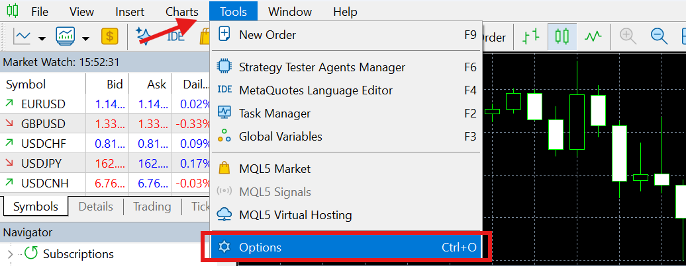
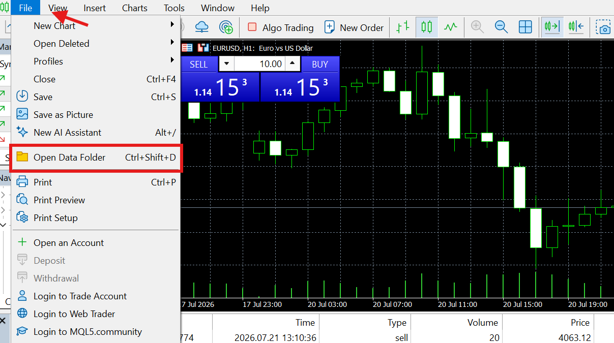
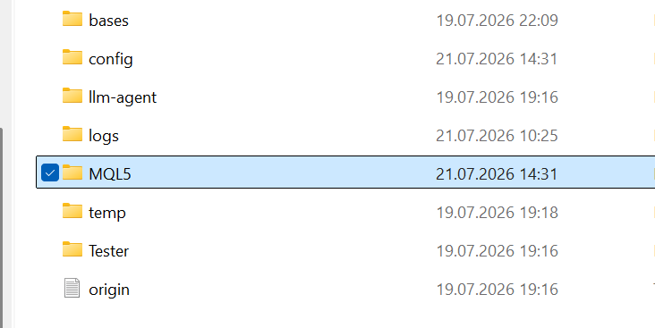
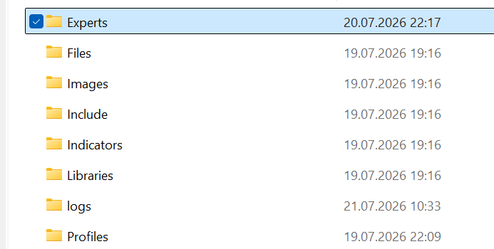
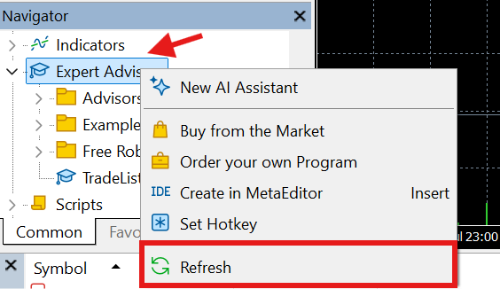
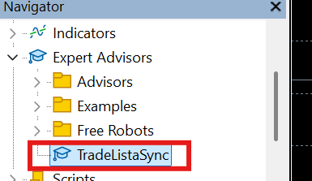
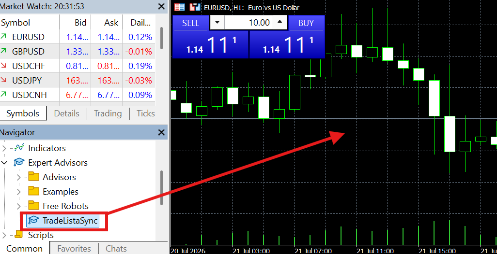
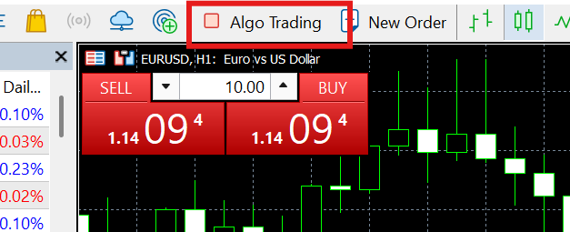
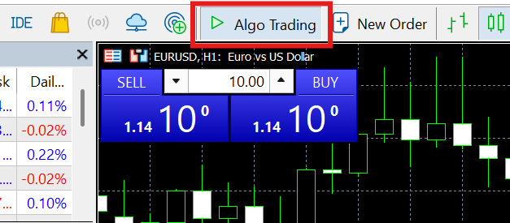

Get your trades into TradeLista
Auto-sync every closed trade with the MT4/MT5 Expert Advisor, or add trades yourself in a few clicks — both land on the same calendar.
Install MetaTrader 54
Already have it installed? Skip to step 2.
Go to metatrader5.com/en/download and click "Download MetaTrader 5". Open the downloaded file and click through the installer — the default settings are fine.
Go to metatrader4.com/en/download and click "Download MetaTrader 4" (or ask your broker for their MT4 installer, if they provide their own branded one). Open the downloaded file and click through the installer — the default settings are fine.


Open a trading account in MetaTrader
Already have a demo or live account set up? Skip to step 3.
Open MetaTrader. A window called "Open an Account" should appear by itself. If it doesn't, click File → Open an Account at the top.
Choose "MetaQuotes-Demo" as the server, then "New Demo Account". Fill in a name, email and starting balance — any values work — and click through to finish.
If you already trade with a real broker, choose that broker's server instead and log in with the account details they gave you.

Allow MetaTrader to talk to TradeLista
This one setting lets the EA send your closed trades to TradeLista. Without it, nothing will arrive — and MetaTrader won't tell you why.
In MetaTrader, click Tools in the top menu bar, then Options. Open the "Expert Advisors" tab.

Check the box "Allow WebRequest for listed URL". Click into the empty field below it, paste this address, and press Enter:
Click OK.

Get your personal API key from TradeLista
This key is how TradeLista knows which account a trade belongs to. EA auto-sync is a Pro feature, so log in at tradelista.com with a Pro account (upgrade here first if you're still on Free).
Click your avatar in the top-right corner, then "Account settings". Scroll down to "Trading accounts" and click "+ Add trading account".
Give it a name (e.g. "My MT5""My MT4"), choose Live or Demo, choose MT5MT4 as the platform, and click "Add account".
Click "🔑 Copy key" next to your new account. Keep this tab open — you'll paste this key in step 8.
Lost the key later or need it on another device? It's always there — open your avatar → "Account settings" → "Trading accounts" and click "🔑 Copy key" next to that account again.
Download the TradeLista Expert Advisor
Click below to save the file to your computer (it usually lands in your Downloads folder):
Click below to save the file to your computer (it usually lands in your Downloads folder):
This EA is read-only: it only reports trades you've already closed. It never places, closes or changes a trade for you — see the FAQ below for details.
Put the file where MetaTrader can find it
In MetaTrader, click File → Open Data Folder. A Windows folder window opens.

Double-click the MQL5MQL4 folder, then double-click Experts.


Copy the TradeListaSync.mq5TradeListaSync.mq4 file you downloaded in step 5 into this Experts folder (drag and drop, or copy-paste).


Compile it
Back in MetaTrader, look at the Navigator panel on the left (press Ctrl+N if you don't see it).
Right-click "Expert Advisors" and click "Refresh". TradeListaSync should now appear in that list.


Right-click it and choose "Modify" — this opens a second window called MetaEditor with the code inside. (Double-clicking attaches it straight to a chart instead — that's step 8, not this one.)
In MetaEditor, click the "Compile" button near the top (or press F7). This turns the code into a program MetaTrader can actually run — without it, there's nothing to attach to a chart in step 8. At the bottom it should say "0 errors, 0 warnings".

Attach the EA to a chart and paste your key
Switch back to the main MetaTrader window. In the Navigator, under Expert Advisors, find TradeListaSync and drag it onto any open chart — the symbol and timeframe don't matter, it watches your whole account.

A window pops up. Click the "Inputs" tab and paste the API key you copied in step 4 into the ApiKey field.

There's also a CatchUpDays field (defaults to 30) — on startup the EA re-sends closed trades from the past that many days that are already in this terminal's history, a best-effort catch-up after a restart. It's not a guarantee: a trade you placed from your phone while your desktop was closed may not sync on its own, so add those to TradeLista manually.
Click the "Common" tab and make sure "Allow algorithmic trading" (or "Allow live trading") is checked. Then click Save and OK to attach the EA.
Turn on Algo Trading (the master switch)
The checkbox in step 8 only gave this one EA permission. There's also a terminal-wide switch that has to be on: near the top of the MetaTrader window, find the button labeled "Algo Trading" (or "AutoTrading") and click it so it's turned on. Both have to be on for the EA to run.


The button's icon changes from a red square (off, left) to a green triangle (on, right). Now look at the top-right corner of your chart: a small smiling-face icon next to TradeListaSync means it's active and running.
Test it
Open a small trade (e.g. the smallest lot size your account allows) and close it again right away — this is just to confirm everything works.
Go back to your TradeLista Calendar, switch to the account you just connected (the account switcher near the top of the page, or in your avatar menu), and the trade should appear on today's date within a few seconds.
Every trade you close from now on will land there automatically — no more manual exporting.

Already been trading? Import your history PRO
The EA only sends trades that close after it's attached — everything you traded before today would otherwise start out blank. To bring that in too: in MetaTrader, go to the History tab, right-click anywhere in it, and choose "Save as Report" (saves an .html file).
Then on your Calendar, click "⬆ Import" next to "+ Add trade", upload that file, review the trades it found, and import them. One-time thing — not a live sync, just a way to backfill what already happened.
Trades aren't showing up on the calendar
How do I see the exact error, if something's wrong?
My test trade didn't do anything when I clicked Buy/Sell
The EA icon in the top-right shows a sad face
TradeListaSync in the Navigator panel — that one's just a file icon, it doesn't indicate anything is wrong). A sad face on the chart means Algo Trading is disabled for that chart. Click the Algo Trading button in the toolbar, or right-click the chart → Expert Advisors → "Allow live trading".Can I connect more than one account?
Does the EA place or modify trades?
The Algo Trading / "Allow algorithmic trading" toggle from steps 8–9 can look like you're granting trading permissions — you're not. MetaTrader requires that toggle to be on for any Expert Advisor to run at all, including a purely read-only one like this. It's a MetaTrader-wide switch, not a permission specific to TradeListaSync.
And your API key only authorizes writing that one account's trade data into your own TradeLista calendar — it can't be used to access your broker account, place trades, or touch any other account.
I don't use an EA — can I still use TradeLista?
Can I import trades I made before connecting the EA?
Log in (or create a free account)
Manual entry works on both the Free and Pro plans — no EA, no download, no setup outside TradeLista itself.
Go to tradelista.com and log in, or create a free account if you don't have one yet.
Open your Calendar
Click "Calendar" in the top menu, or go straight to tradelista.com/app.html.
Add a trade — two ways to do it
Option A: click "+ Add trade" near the top-right of the Calendar. It opens a blank form and lets you pick the date yourself.
Option B: click directly on the day in the Calendar you traded on, then click "Add trade for this day" inside it. The date is filled in for you automatically.
Both options open the exact same form — pick whichever is faster for you.
Fill in the trade
Required: Date, Symbol / pair (e.g. EURUSD), Lot size, and Profit / loss.
Optional: Entry price and Exit price — add them if you have them, but they're not required to save the trade.
Click "Add" — you're done
The trade appears on the calendar immediately, colored green or red depending on the result.
Want to add more detail? Click the trade afterward to open it — you can write a note and add tags on any plan; screenshots, reflection questions and Golden Trading Rules are part of Pro.
Can I edit or delete a trade after adding it?
Can I switch to EA auto-sync later?
Ready to get started?
Open your Calendar and add your first trade — it takes less than a minute.